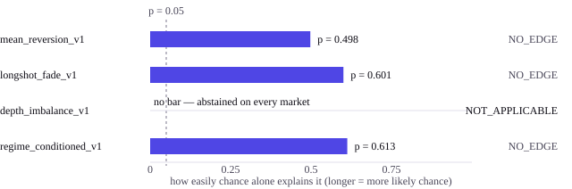

Research system
Prediction-market research and trading system
I built the whole pipeline for testing trading ideas on prediction markets, then used it to show that four of my own ideas did not work.
A prediction market is one where a contract pays $1 if some event happens and nothing if it does not, so its price reads directly as a probability. I wrote the software that watches these markets continuously, stores what it sees, and then replays trading strategies against that stored history to see whether they would have made money.
The replay is deliberately unforgiving. It only ever lets a strategy see what was knowable at the time, steps forward through history in order, and charges the fees and the spread a real trade would have paid. Four strategies went through it. All four came out flat — no better than picking at random. That is the headline result, and reporting it was the point of building the thing: a backtest that only ever confirms your ideas is not a backtest.
One of the four is worth singling out. It needed information about the queue of resting buy and sell offers, which my historical data does not contain. Rather than substitute a rough stand-in and produce a number that looked real, it declined to trade at all and reported itself as inapplicable. A tool that tells you it cannot answer is more useful than one that guesses.

strategies/depth_imbalance.py — the abstention path
snap = market_state.get("latest_snapshot")
if snap is None:
return _abstain("latest_snapshot missing from state")
dimb = getattr(snap, "depth_imbalance", None)
if dimb is None:
return _abstain("L2 depth_imbalance not available (L1-only snapshot)")
mid = float(getattr(snap, "mid", 0.0))
if not (self.extreme_lo < mid < self.extreme_hi):
return _abstain(
f"mid {mid:.3f} is at extreme; depth imbalance there is "
f"artifactual not informational")
Here L2 means the full list of resting buy and sell offers, and L1 only the single best price on each side. Three separate reasons to decline, and no branch that guesses. _abstain returns
"no trade" with the reason attached, so the refusal is recorded rather than silent.
The technical version
A complete research stack for a prediction-market venue: continuous collection, a modelling layer, and a fee-aware backtester. Six scheduled collectors feed an audited panel of 400 resolved markets and 188,856 trades, licence-clean and hash-verified. A predecessor execution line on BTC used gradient boosting with isotonic calibration across 35 tested hypotheses; its recorded limitation is that win rate is flat across edge magnitude, so the model captures direction but not conviction.
Headline result — negative
All four candidate strategies scored NO_EDGE against a random
baseline under a market-clustered
bootstrap:
mean_reversion_v1 p=0.498,
longshot_fade_v1 p=0.601,
regime_conditioned_v1 p=0.613. Verdict bands were
fixed in advance: below 0.05 beats random, 0.05–0.20 weak, at or above 0.20 no edge.
depth_imbalance_v1 returned NOT_APPLICABLE: the
historical dataset carries no
L2 depth — bid and ask are
null on every snapshot per the data audit — so its only signal is missing everywhere and
it abstains universally. Reported as not applicable rather than faked with a
tape-derived proxy.
One positive, with its caveat
A behavioural trader typology reached BEHAVIOR_PREDICTS_PNL on held-out profit and loss — Kruskal–Wallis p=7.7e-07, with 6 of 45 pairs surviving Bonferroni correction. Cluster stability was only MIXED: mean bootstrap adjusted Rand index 0.41. Reported with that caveat attached rather than on the strength of the p-value alone.
Real-time WebSocket pipelines, XGBoost with isotonic calibration, live inference and order execution, walk-forward backtesting with realistic fill simulation, Linux, systemd.